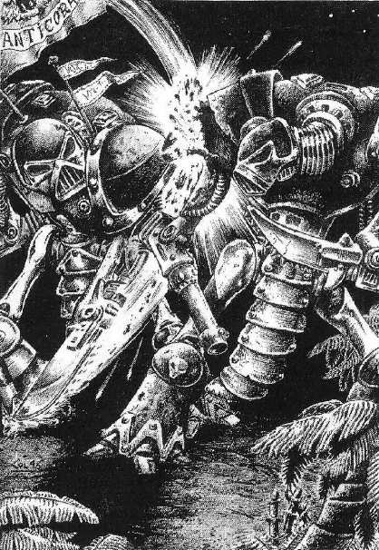
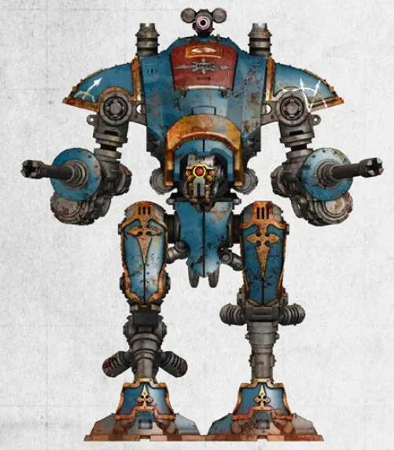
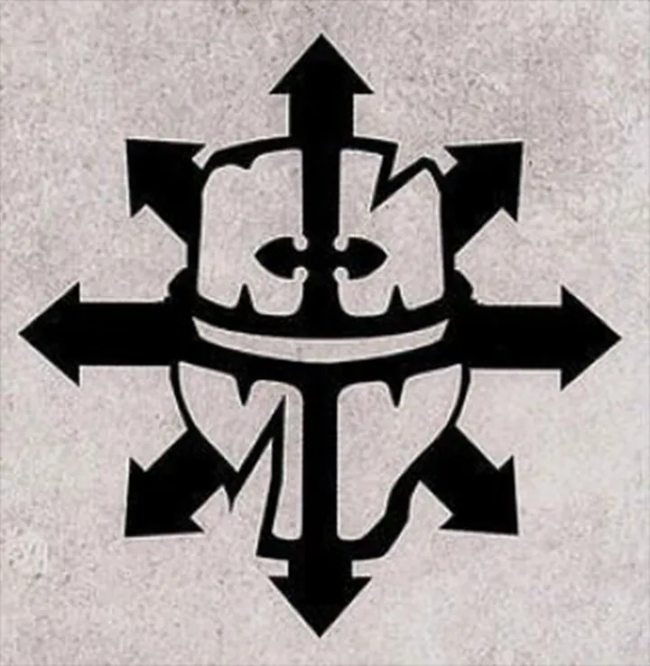
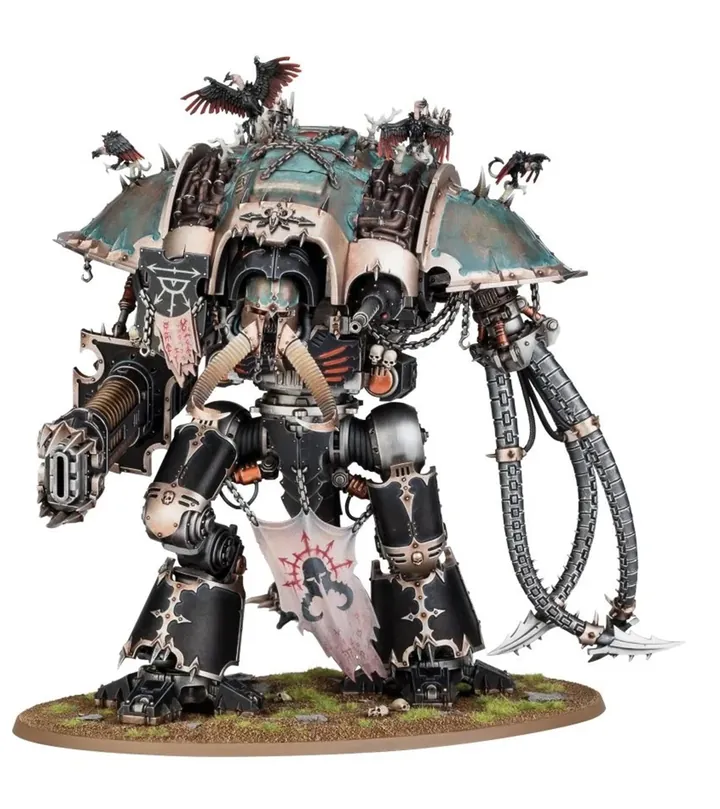
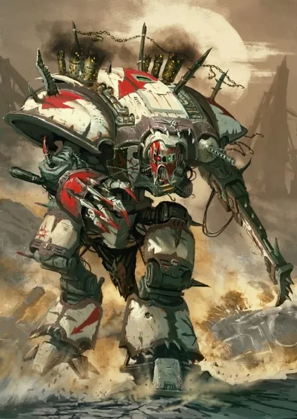
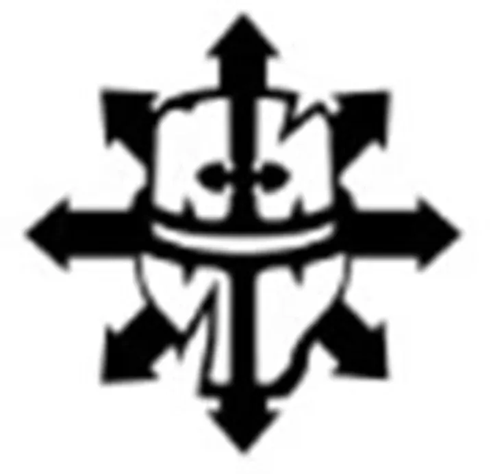

01ภาพรวม
หุ่นรบของตระกูลขุนนางที่ถูกความมืดครอบงำ — ปีศาจกับนักบินหลอมรวมเป็นหนึ่ง
02ต้นกำเนิด
ช่วง Horus Heresy บางตระกูล Knight ทรยศตามแม่ทัพฝ่ายกบฏ อีกส่วนตกเป็นของ Chaos ในภายหลังจากการถูกปีศาจสิงหรือความเสื่อมภายใน Knight ที่ทรยศเดี่ยว ๆ เรียกว่า Dreadblade
03เนื้อเรื่องเจาะลึก
กำเนิดในยุค Heresy
ตระกูลอัศวินหลายตระกูลเข้าข้าง Horus เพราะความภักดีต่อ Mechanicum ฝ่ายทรยศ บางตระกูลตกเป็นของ Chaos ในภายหลังด้วยการล่อลวงของปีศาจ ปัจจุบันพวกเขาบุกออกมาเป็นกองทัพกับ Chaos Space Marines
04ยุค 30K — ในยุค Great Crusade และ Horus Heresy

ยุค 30K ตระกูล Knight ทั้งหมดยังรับใช้จักรพรรดิหรือดาวอังคาร จนสงครามกลางเมืองทำให้บางตระกูลเลือกข้าง Horus
ดูภาพรวมยุค 30K ทั้งหมดที่ เนื้อเรื่องยุค 30K และความต่างของสองยุคที่ เปรียบเทียบ 30K vs 40K
05นิสัยและวัฒนธรรม
- ใช้ความหวาดกลัวทำลายขวัญศัตรู
- ปกครองดาวของตัวเองแบบทรราช
- บางคันถูกปีศาจสิงอยู่ในเครื่อง
06จุดที่น่าสนใจ
- Abhorrent: Knight ที่กลายพันธุ์หนักจนเป็นสัตว์ประหลาดเหล็ก
07ความสามารถพิเศษ
สิ่งที่ทำให้ Chaos Knights แตกต่างจากทัพอื่น — ทั้งพลังที่ติดตัวมาทั้งเผ่า/ทัพ และความสามารถของบุคคลสำคัญ
ของทั้งเผ่า/ทัพ
บัลลังก์ที่ถูกครอบงำ
Throne Mechanicum ของ Chaos Knights เต็มไปด้วยวิญญาณบรรพบุรุษที่บ้าคลั่งหรือปีศาจ นักขับกลายเป็นทรราชที่ไม่มีความเป็นมนุษย์เหลือ

ปกครองด้วยความกลัว
ตระกูลทรยศใช้ความหวาดกลัวบังคับทั้งดาวให้รับใช้ และปล่อยหุ่น War Dog เป็นฝูงล่าผู้หลบหนี
08หน่วยและบทบาทในกองทัพ
Chaos Knights คือตระกูลอัศวินที่ทรยศ นักขับถูกวิญญาณบรรพบุรุษที่เสื่อมทรามใน Throne Mechanicum กลืนกิน บางหุ่นมีปีศาจสิงอยู่

Tyrant
ไทแรนต์ผู้ปกครองตระกูลทรยศ (Infernal House / Traitoris Lance) ปกครองด้วยความกลัว

Knight Abominant
อัศวินอะโบมิแนนต์หุ่นที่นักขับทำสัญญากับปีศาจ ใช้พลังจิต Warp

Knight Despoiler / Rampager
อัศวินเดสปอยเลอร์ / แรมเพจเจอร์หุ่นขนาดใหญ่ Questoris-class ที่ทรยศ Rampager ใช้บุกประชิดตัว
War Dog
วอร์ด็อกหุ่นขนาดเล็ก (เทียบ Armiger) ขับโดยทาสที่ถูกผูกจิต ล่าเหยื่อเป็นฝูง

Dreadblade
เดรดเบลดอัศวินพเนจรฝ่าย Chaos (เทียบ Freeblade) ที่เร่ร่อนสร้างความหวาดกลัว
09วีรกรรมและเหตุการณ์สำคัญ
Nachmund Gauntlet
พบดาว Knight Dharrovar ที่หายไปตั้งแต่ยุค Heresy และเกิดสงครามกลางเมืองเมื่อผู้นำตกเป็นของ Chaos
10ยุค 40K — สหัสวรรษที่ 41
ยุค 40K Chaos Knights เป็นกองกำลังเร่ร่อนหรือทรราชบนดาวห่างไกล
11เนื้อเรื่องล่าสุด (Era Indomitus / M42)
เมื่อ Great Rift เปิด พวกเขารวมตัวกันออกทำสงครามพร้อมกองทัพ Chaos อื่น ๆ
หลังการเกิด Great Rift ปฏิทินของจักรวรรดิคลาดเคลื่อน เหตุการณ์ยุคปัจจุบันจึงมักระบุเพียง 'M42' ไม่มีปีที่แน่นอน